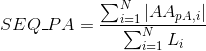
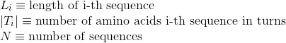
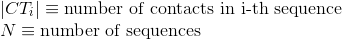
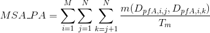

Francisco M. Ortuño Guzman
Personal Web Page
INPROF Web Server
HELP - Feature Description
Number of sequences. One sequence of amino acids is considered for each protein.

Average length of protein's sequences:
Maximum lenght in the protein's sequences:
Minimum lenght in the protein's sequences:
Variance of the length in the protein's sequences:
Percentage of polar uncharged amino acids in protein's sequences:

Percentage of non-polar aliphatic amino acids in protein's sequences:
Percentage of basic positively-charged amino acids in protein's sequences:
Percentage of aromatic positively-charged amino acids in protein's sequences:
Percentage of negatively-charged amino acids in protein's sequences:
Percentage of amino acids in protein's sequences that are included in Pfam-A domains (see Pfam database for details):

Percentage of amino acids in protein's sequences that are included in Pfam-B domains (see Pfam database for details):
Percentage of amino acids in protein's sequences that are included in any Pfam domains (see Pfam database for details):

Percentage of amino acids in protein's sequences that are included in any Pfam clan. Clans are defined as groups of related domains (see Pfam database for details):
Number of annotated Pfam-A domains per protein (see Pfam database for details):
Number of annotated Pfam-B domains per protein (see Pfam database for details):
Number of annotated domains per protein (see Pfam database for details):
Number of annotated Pfam clans per protein. Clans are defined as groups of related domains (see Pfam database for details):
Number of Pfam-A domains shared between each two proteins (see Pfam database for details):
Number of Pfam-B domains shared between each two proteins (see Pfam database for details):
Number of Pfam domains shared between each two proteins (see Pfam database for details):
Number of Pfam clans shared between each two proteins. Clans are defined as groups of related domains (see Pfam database for details):
Percentage of amino acids in protein's sequences included in helix secondary structures. Similarly to Uniprot,
α-helices, 3(10) helices and π-helices are annotated as helices, corresponding to the element encoded as 'H', 'G' and 'I' in DSSP annotation, respectively.
Percentage of amino acids in protein's sequences included in β-strand secondary structures. Similarly to Uniprot,
hydrogen-bonded β-strands and isolated beta bridges are annotated as strands, corresponding to the element encoded as 'E' and 'B' in DSSP annotation, respectively.
Percentage of amino acids in protein's sequences included in hydrogen-bonded turn secondary structures. Similarly to Uniprot,
this secondary structure corresponds to the element encoded as 'T' in DSSP annotation.

Percentage of amino acids in protein's sequences included in any other different secondary structures or whose secondary structure is unknown.
Number of annotated PDB tertiary structures per protein (see Protein Data Bank (PDB) for details):

Percentage of proteins with at least one annotated PDB tertiary structure (see Protein Data Bank (PDB) for details):
Number of PDB tertiary structures shared between each two proteins (see Protein Data Bank (PDB) for details):
Number of contacts per protein. A contact in a protein is determined when any pair of atoms in two different amino acids of the protein are close enough that a solvent molecule cannot be inserted between them. Only contacts involving two amino acids separated by at least five amino acids are considered here to avoid the influence of secondary structures.

Number of Gene Ontology (GO) terms per protein (see Gene Ontology (GO) documentation for details about this ontology):
Number of Gene Ontology (GO) terms under the molecular function (MF) ontology per protein (see Gene Ontology (GO) documentation for details about this ontology):
Number of Gene Ontology (GO) terms under the cellular component (CC) ontology per protein(see Gene Ontology (GO) documentation for details about this ontology):
Number of Gene Ontology (GO) terms under the biological process (BP) ontology per protein (see Gene Ontology (GO) documentation for details about this ontology):
Number of Gene Ontology (GO) terms shared between each two proteins (see Gene Ontology (GO) documentation for details):
Percentage of identities in the alignment. An identity is considered when the same amino acid is aligned in the same position of two different protein's sequences:
Percentage of gaps in the alignment. Gaps are used to model insertion/deletion in sequences and improve the alignment of these sequences:
Percentage of totally conserved columns in the alignment. A column is considered totally conserved when the same amino acids have been aligned for all the sequences:
Percentage of matches between pairs of polar uncharged amino acids in the alignment:
Percentage of matches between pairs of non-polar aliphatic amino acids in the alignment:
Percentage of matches between pairs of basic positively-charged amino acids in the alignment:
Percentage of matches between pairs of aromatic positively-charged amino acids in the alignment:
Percentage of matches between pairs of acid negatively-charged amino acids in the alignment :
Percentage of matches in the alignment between pairs of amino acids in the same Pfam domain (see Pfam database for details):
Percentage of matches in the alignment between pairs of amino acids in the same Pfam-A domain (see Pfam database for details):

Percentage of matches in the alignment between pairs of amino acids in the same Pfam-B domain (see Pfam database for details):
Percentage of matches in the alignment between pairs of amino acids in the same clan (see Pfam database for details):
Percentage of matches in the alignment between pairs of amino acids included in helix secondary structures. Similarly to Uniprot,
α-helices, 3(10) helices and π-helices are annotated as helices, corresponding to the element encoded as 'H', 'G' and 'I' in DSSP annotation, respectively:
Percentage of matches in the alignment between pairs of amino acids included in β-strand secondary structures. Similarly to Uniprot,
hydrogen-bonded β-strands and isolated beta bridges are annotated as strands, corresponding to the element encoded as 'E' and 'B' in DSSP annotation, respectively:
Percentage of matches in the alignment between pairs of amino acids included in hydrogen-bonded turn secondary structures. Similarly to Uniprot,
this secondary structure corresponds to the element encoded as 'T' in DSSP annotation, respectively:

Percentage of matches in the alignment between pairs of amino acids included in any other different secondary structures or whose secondary structure is unknown:
Percentage of matches in the alignment between pairs of amino acids sharing the same secondary structure type:
Percentage of contacts between two amino acids in each sequence that are correctly aligned with other two amino acids in contact from other sequences. A contact in a protein is determined when any pair of atoms in two different amino acids of the protein are close enough that a solvent molecule cannot be inserted between them.
Only contacts involving two amino acids separated by at least five amino acids are considered here to avoid the influence of secondary structures.
Accuracy of the alignment based on the tertiary structure of the sequences through STRIKE score. STRIKE evaluates alignments according to its estimation of contacts of protein structures matching in the alignment.
More information about the calculation of this score at STRIKE website